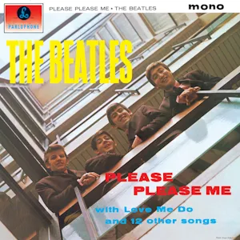
Please Please Me 1963
Recorded mostly in a single day in February 1963.
Thirteen albums in eight years, from the UK releases of 1963 to Let It Be in 1970.

Recorded mostly in a single day in February 1963.
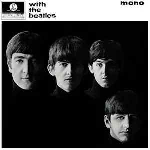
Its half-shadowed cover portrait was taken by photographer Robert Freeman.
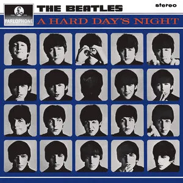
Their first album made up entirely of Lennon–McCartney songs.
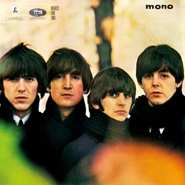
Recorded between tours. It includes “Eight Days a Week.”
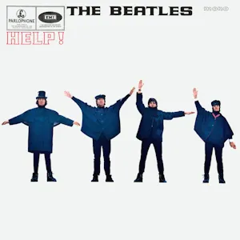
The soundtrack to their second film, with “Yesterday” and “Ticket to Ride.”
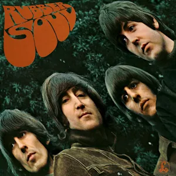
A turn toward folk rock, with “In My Life” and “Norwegian Wood.”
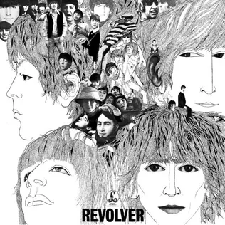
Studio tricks like backward tape and a string octet on “Eleanor Rigby.”
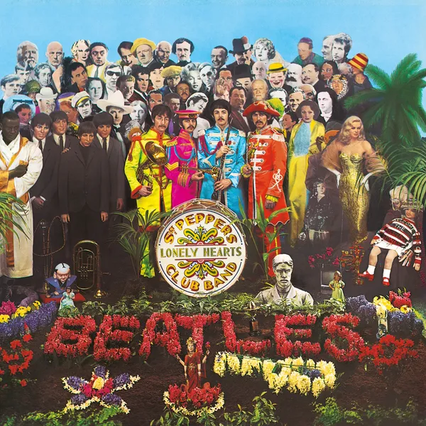
The first rock album to win the Grammy for Album of the Year.
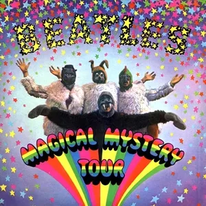
With “Strawberry Fields Forever,” “Penny Lane,” and “I Am the Walrus.”
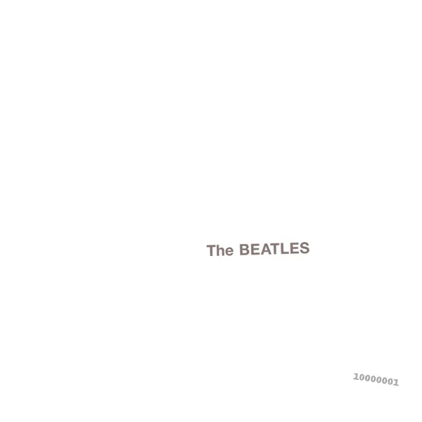
A double album of 30 songs, with a plain white cover.
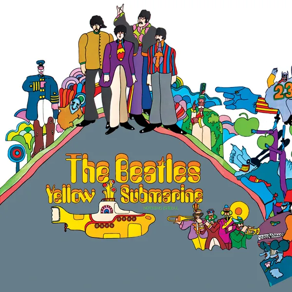
The soundtrack to the animated film, with only four new Beatles songs.

The last album they recorded together.
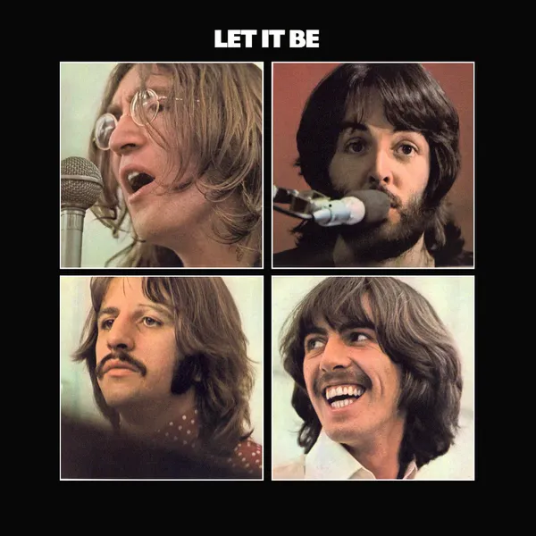
Released a month after the breakup, though recorded mostly before Abbey Road.